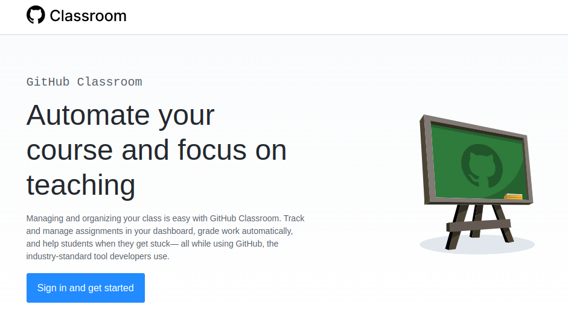

git skal der lige foretages noget førstegangsopsætning.vim, så skal I lægge særligt mærke til afsnittet Your Editor.git, så er standardgrennavnet (default branch name) main allerede. I kan nok derfor ignorere afsnittet Your default branch name.Sign up for GitHub
personal access token.personal access token, som var det et almindeligt password.
klone opgaverne vha. git.
For at gøre det så let for jer (og mig) som muligt, skal I i fremtiden anvende
git med en omgang minestryger.git-bash (eller anden kommandoprompt med adgang til git).cd sti\til\logbog.git clone https://url.til.logbogJeres første indhold i logbogen
git.
gren skal man stå for at merge to grene sammen?gren skal man stå for at rebase to grene?merge og rebase?Det forventes, at I skriver logbog hver uge!